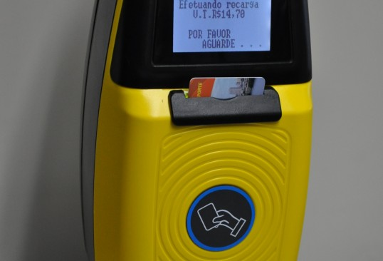
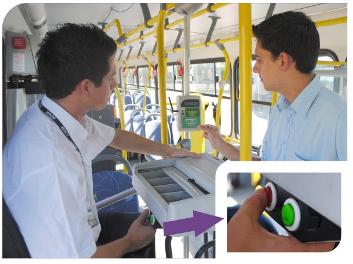

EQUIPAMENTOS UTILIZADOS NO SISTEMA DE BILHETAGEM ELETRÔNICA
Validador
O validador é o equipamento eletrônico responsável por armazenar todas as informações relativas à operação.

Este equipamento também é uma importante ferramenta de trabalho do Operador,
pois armazena em sua memória os créditos eletrônicos descontados dos cartões dos passageiros,
que serão repassados ao Operador após a comunicação do validador com o SBE.
O validador é composto das seguintes partes:
- Leds de sinalização: Par de luzes situadas no topo do equipamento, que piscam de diferentes maneiras para indicar a ação do validador;
- Display:Tela de cristal líquido que exibe informações de acordo com o status do validador;
- Área de Leitura de Cartões: Parte frontal do validador, onde devem ser aproximados os cartões para que seja efetuada a leitura;
- Mounting Kit: Parte traseira do validador, que é afixada ao balaústre do veículo.
As principais funções do validador são:
Identificar e efetuar a validação dos cartões apresentados, conforme as regras de utilização estabelecidas no SBE;
Informar ao Operador, por meio de sinal luminoso, sonoro e mensagem no display, quando forem apresentados cartões com benefício (gratuidade), bloqueados, inválidos ou sem saldo;
Liberar a catraca, caso o veículo possua catraca eletromecânica;
Debitar o valor da tarifa dos créditos dos cartões ;
Gravar nos cartões o valor descontado, saldo remanescente, data, hora e veículo utilizado;
Informar ao passageiro com cartão, através do display, o valor debitado, o saldo remanescente de créditos, se o cartão está bloqueado, inválido ou sem créditos;
Receber informações de periféricos como botoeira, teclado de seccionamento, etc.;
Armazenar informações sobre o veículo, linha utilizada, sentido de viagem, identificação do Operador e dos passageiros, quantidade de passageiros transportados, valor arrecadado, etc.;
Efetuar a comunicação com o ponto de coleta, para transferir os dados armazenados para o SBE.
Todo funcionamento do validador é baseado na leitura de cartões inteligentes (SMARTCARDS).
Para serem lidos, os cartões devem ser posicionados, por alguns
segundos, próximos à área de leitura do validador. O validador executará diferentes ações, dependendo do cartão utilizado:
CARTÃO DO USUÁRIO:durante a viagem, o passageiro apresenta seu cartão ao validador que efetua a validação do cartão. Se não existirem restrições no cartão, o validador desconta o valor correspondente à tarifa e armazena essa informação em sua memória.
CARTÃO OPERACIONAL:o Operador utilizará esse cartão para efetuar as mudanças de status/função de seu validador.
